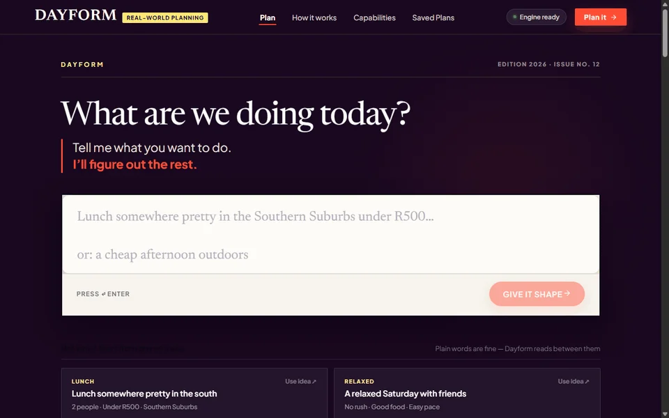
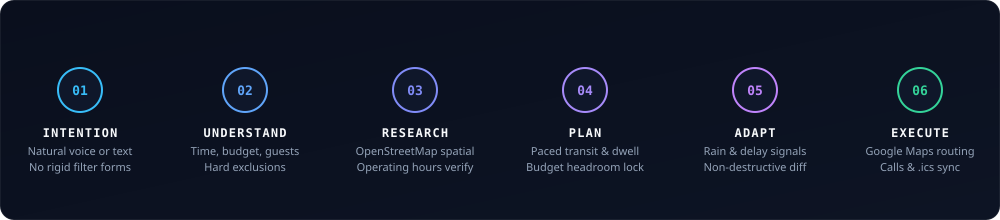
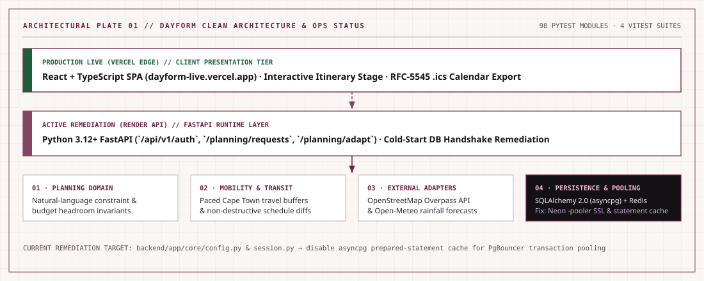

01 // FULL-STACK ITINERARY ENGINE · CAPE TOWN
Frontend Live (Vercel) · Backend DB Connectivity in Active Remediation


Intent → Constraints → Spatial & Weather Match → Itinerary)
asyncpg Neon -pooler TLS Remediation ArchitectureDayform
Turning freeform Cape Town outing prompts into time-sequenced, weather-aware, Rands-bounded itineraries.
Built with a clean React + TypeScript SPA on Vercel and a Python FastAPI domain engine integrating OpenStreetMap Overpass, Open-Meteo rainfall windows, Redis caching, and RFC-5545 .ics calendar export.
- Verified Tests
- 98 backend Pytest test modules + 4 frontend Vitest suites across planning, mobility, and auth.
- Production Reality
- Vercel SPA serves live (HTTP 200); Render FastAPI +
asyncpgNeon-poolerhandshake undergoing active SSL/PgBouncer remediation. - Active Fix
- Hardening
resolve_asyncpg_connect_config, disabling prepared statement caches for pooler mode, and addingpool_recycle.
- React + TypeScript
- Python 3.12 · FastAPI
- SQLAlchemy 2.0 (asyncpg)
- Alembic
- Redis 7
- OSM Overpass · Open-Meteo